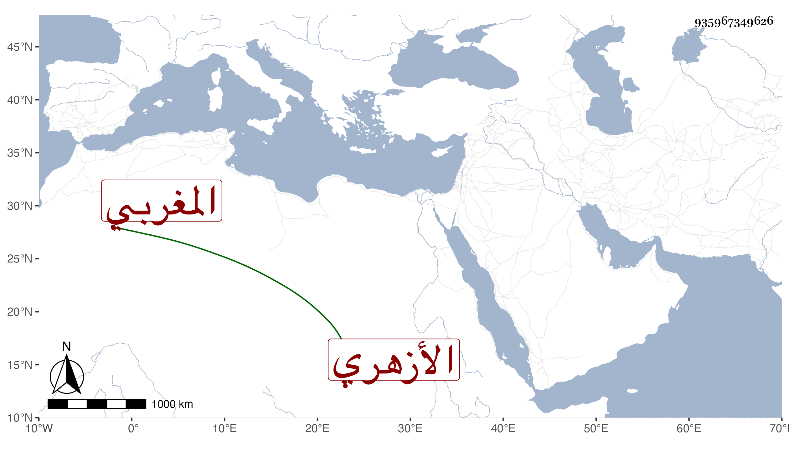

0902Sakhawi.DawLamic.ITO20230111-ara1.EIS1600.935967349626
Biography ID: 935967349626
722
خليفة المغربي ثم الأزهري . شيخ معتقد انقطع به للعبادة نيفا وأربعين سنة . مات فجأة بالحمام في حادي عشري المحرم سنة تسع وعشرين وصلى عليه بالجامع ثم دفن بالصحراء ووجد له شيء كثير وكان محترما مهابا زائد لخفر رحمه الله .
